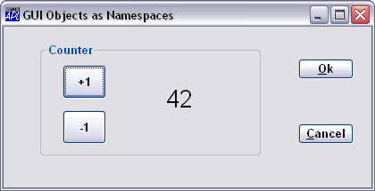
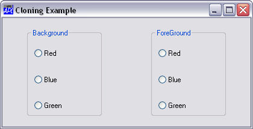

GUI objects are a special type of namespace and this has several useful implications. Firstly, instead of creating the children of an object from outside in the workspace, you can use )CS to change to an object and create them from within. The only restriction is that you can only create GUI objects that are valid as children of the current object. A second benefit is that you can put the callback functions, together with any global variables they require, into the objects to which they apply. Consider the following example.
First make a Form F1
'F1' ⎕WC 'Form' 'GUI Objects as Namespaces'
('Size' 25 50)Then change to the Form’s namespace
)CS F1 #.F1
Now you can create a Group (or any other child object), but because you are already inside the Form, the name you give to the Group will be taken as being relative to the Form. In other words, you must specify the part of the name that applies to the Group itself, leaving out the 'F1.' prefix that you would use if you executed the statement outside in the workspace.
'CH' ⎕WC 'Group' 'Counter' (10 10)( 70 60)
You can continue to create other objects
'OK' ⎕WC 'Button' '&Ok' (20 80)(⍬ 15)
'CAN' ⎕WC 'Button' '&Cancel' (60 80) (⍬ 15)
'FNT' ⎕WC 'Font' 'Arial' 16 ('Weight' 700)If you ask for a list of objects, you will see only those within the current namespace
)OBJECTS CAN CH FNT OK
When you are inside an object you can also set (or get) a property directly, so you can set the FontObj property for the Form with the following statement.
FontObj←'FNT'
You can achieve the same with ⎕WS by omitting its left argument:
⎕WS 'FontObj' 'FNT'
You can create a child of the Group from outside it ...
'CH.UP' ⎕WC 'Button' '+1' (20 10)(30 20)
or you can change to it and create others from within...
)CS CH
#.F1.CH
'DOWN' ⎕WC 'Button' '-1' (60 10)(30 20)
'FNT' ⎕WC 'Font' 'Arial' 32
'CTR' ⎕WC 'Label' ('FieldType' 'Numeric' )
('FontObj' 'FNT') Once again, if you request a list of objects you will see only those in the current namespace.
)OBJECTS CTR DOWN FNT UP
You can create functions and variables in a GUI namespace in exactly the same way as in any other. So, for example, you could create a variable called COUNT and a function CHANGE to update it:
COUNT ← 0 ∇ INCR CHANGE MSG [1] COUNT←COUNT+INCR [2] CTR.Value←COUNT ∇
You can also make CHANGE a callback function for the two Buttons.
UP.onSelect←'CHANGE' 1 DOWN.onSelect←'CHANGE' ¯1
Notice that because you were in the F1.CH namespace when you made this association, the event will fire the function CHANGE in the F1.CH namespace and, furthermore, it will execute it within that namespace. Hence the names referenced by the function are the local names, i.e. the variable COUNT and the Label CTR, within that namespace.
So if you now switch back to the outer workspace
)CS #
and click on the buttons...
The result will appear approximately as shown below

Monadic ⎕WC is used to attach a GUI component to an existing object. The existing object must be a pure namespace or an appropriate GUI object (one that can legitimately be placed at that point in the object hierarchy). The operation may be performed by changing space to the object or by running ⎕WC inside the object using the dot syntax. For example, the following statements are equivalent.
)CS F #.F ⎕WC 'Form' ⍝ Attach a Form to this namespace )CS # F.⎕WC'Form' ⍝ Attach a Form to namespace F
Monadic ⎕WC is often used in conjunction with the KeepOnClose property. This property specifies whether or not an object remains in existence when its parent Form (or in the case of a Form, the Form itself) is closed by the user or receives a Close event.
This facility is particularly useful if you wish to have functions and variables encapsulated within your Forms. You may want to save these structures in your workspace, but you do not necessarily want the Forms to be visible when the workspace is loaded.
An alternative way to achieve this is to prevent the user from closing the Form and instead make it invisible. This is achieved by intercepting the Close event on the Form and set its Visible property to 0. Then, when the Form is subsequently required, its Visible property is set back to 1. However, if the Form needs adjustment because the workspace was loaded on a PC with different screen resolution or for other reasons, it may not be easy to achieve the desired result using ⎕WS. Monadic ⎕WC is generally a better solution.
The use of a GUI name in an expression is a reference to the GUI object, or ref for short. If you assign a ref or call a function with a ref as an argument, the reference to the GUI object is copied, not the GUI object itself.
So for example, if you have a Form named F:
'F'⎕WC 'Form'
Assigning F to F1, does not create a second Form F1; it simply creates a second reference (F1) to the Form F. Subsequently, you can manipulate the Form F using either F or F1.
F1←F F1 #.F F1.Caption←'Hello World' F.Caption Hello World
Similarly, if you call a function with F as the argument, the local argument name becomes a second reference to the Form, and a new Form is not created:
Here is a simple function which approximately centres a Form in the middle of the screen:
∇ R←SHOW_CENTRE FORM;OLD;SCREEN [1] SCREEN←⊃'.'⎕WG'DevCaps' [2] OLD←FORM.Coord [3] FORM.Coord←'Pixel' [4] R←FORM.Posn←⌊0.5×SCREEN-FORM.Size [5] FORM.Coord←OLD ∇
The function can be called using either F or F1 (or any other Form) as an argument:
SHOW_CENTRE F 287 329 SHOW_CENTRE F1 287 329
A ref to a GUI object can conveniently be used as the argument to :With; for example, the SHOW_CENTRE function can instead be written as follows:
∇ R←SHOW_CENTRE FORM;OLD;SCREEN [1] SCREEN←⊃'.'⎕WG'DevCaps' [2] :With FORM [3] OLD←Coord [4] Coord←'Pixel' [5] R←Posn←⌊0.5×SCREEN-Size [6] Coord←OLD [7] :EndWith ∇
If instead, you actually want to duplicate (clone) a GUI object, you may do so by calling ⎕WC with a ref as the right argument and the new name as the left argument.
For example:
'F' ⎕WC 'Form' 'Cloning Example'
'F.B' ⎕WC 'Group' 'Background' (10 10)(80 30)
'F.B.R' ⎕WC 'Button' 'Red' (20 10)('Style' 'Radio')
'F.B.B' ⎕WC 'Button' 'Blue' (50 10)('Style' 'Radio')
'F.B.G' ⎕WC 'Button' 'Green' (80 10)('Style' 'Radio')Then, instead of creating a second Group for selecting Foreground colour line by line as before, you can clone the "Background" Group as follows:
'F.F' ⎕WC F.B
The new Group F.F is an exact copy of F.B and will have the same Posn, Size and Caption, as well as having identical children. To achieve the desired result, it is therefore only necessary to change its Posn and Caption properties; for example:
F.F.Caption F.F.Posn ← 'ForeGround' (10 60)
The result is illustrated below.

Note that when a namespace is cloned in this way, the objects (functions, variables and other namespaces) within it are not necessarily duplicated. Instead, the objects in cloned namespaces are in effect just pointers to the original objects. However, if you subsequently change the clone, or the original object to which it refers, the two are de-coupled and a second copy ensues. This mechanism makes it possible to create large numbers of instances of a single class namespace without consuming an excessive amount of workspace.